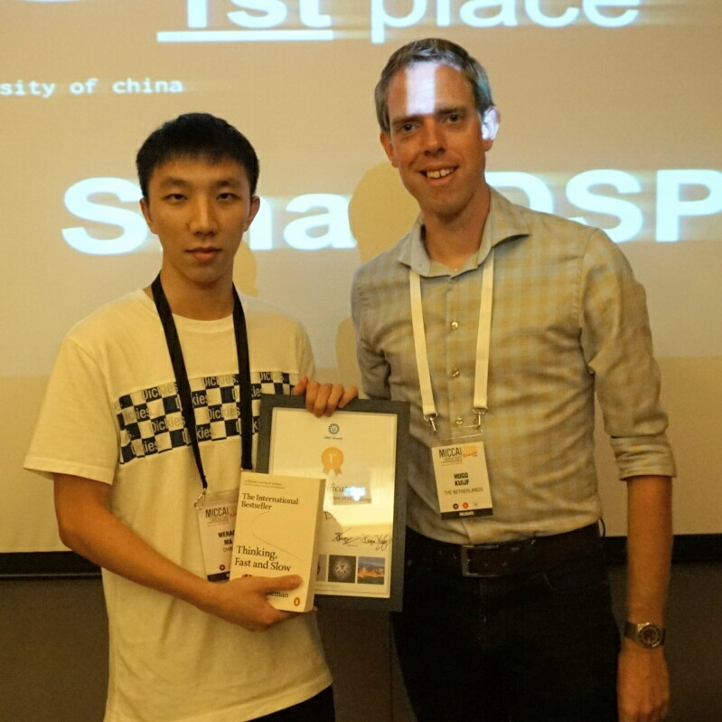

9月16日消息，在日前西班牙格林纳达举办的MRBrainS18竞赛中，来自厦门大学信息科学与技术学院通信工程系丁兴号教授课题组的SmartDSP团队在3类分割项目上取得了第一的优异成绩。
MRBrainS18竞赛由医学影像分析顶级会议MICCAI所举办，旨在对比和评价基于磁共振影像的人类大脑组织自动分割模型。在三分类项目中，比赛任务为设计算法将人类大脑组织自动分割为3类，即脑灰质（GM）、脑白质（WM）和脑脊液（CSF）。该竞赛在医学影像分割领域具有较强影响力。
此次竞赛吸引了来自全世界顶级高校以及顶级公司研究团队参与比赛，最后排行榜前34只队赴西班牙参与了总决赛，其中包括斯坦福大学、北卡罗来纳大学、亚琛工业大学、香港中文大学、清华大学、华中科技大学、腾讯等国内外知名高校和公司。比赛分为算法设计、效果测试与最终的答辩环节，经过数个月的努力，三分类项目冠军最终由厦门大学SmartDSP团队斩获。
厦门大学SmartDSP实验室是一所专注于研究机器学习、智能数据处理以及医学医疗影像处理与分析的团队。SmartDSP参赛队由丁兴号教授带队，黄悦副教授和蔡聪波副教授提供指导，主要队员为博士生孙立言和硕士研究生生马文骜，孙立言负责算法开发与设计，马文骜负责代码实现与调试，并由马文骜代表团队在会场做口头报告和墙报展示。

SmartDSP团队从磁共振大脑影像的数据特性出发，综合利用多模态磁共振影像之间的互补信息，对分割任务中的空间注意力机制进行高效建模，增强了特征的表达能力。我们提出的模型达到了脑组织分割领域的最优性能。